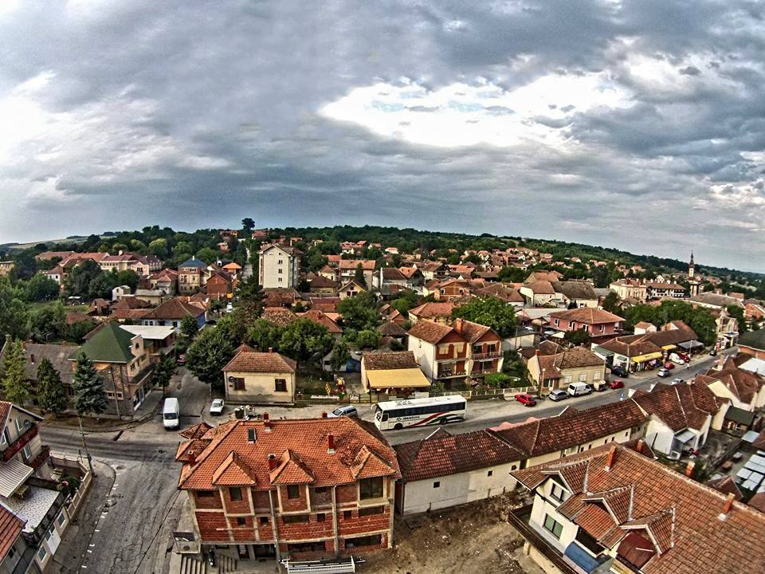

Korisni linkovi:
Opština Rača:  Ministarstvo prosvete:

Srednja skola u Rači osnovana je 1920. godine.Na molbu građana varoši Rače i Lepenskog sreza, ministarstvo prosvete Kraljevina Srba, Hrvata i Slovenaca, usledilo je odobrenje od strane ministra da u Rači može otpočeti sa radom Srednje škole. Ministar je izdao dozvolu pošto je bilo prijavljeno 150 đaka, obezbeđen nastavni kadar, školski nameštaj i novčani osnivački fond. Ukaz kralja Petra I o osnivanju škole je potpisan 17. septembra 1920. godine, a škola je počela sa radom 1. septembra iste godine
Do jeseni 1950. godine račanska škola je radila kao nepotpuna gimnazija, a od ove godine u školu se upisuju učenici petog i šestog razreda. Ova škola je počela sa radom 1946. godine. U početku je radila u vidu četvoromesečnog i petomesečnog tečaja, a kasnije ovi kursevi i prerastaju u razrednu nastavu. Školske 1957. i 1958. godine, oformljena je potpuna škola sa sva tri razreda,a sastav učenika po zanimanjima bio je: automehaničar, bravar, kovač, potkovač, limar, električar, stolar, obućar, opančar, sarač, mlinar, pekar, trgovac i berberin. Poljoprivredna škola je osnovana 1957. godine Školske 1957. i 1958. godine u školi je od prvog do četvrtog razreda bilo svega 85 ucenika. Prvih godina škola nije imala svoju ekonomiju: problem je bio odsustvo mehanizacije i neizvršeno stvaranje većih poseda obrađivanog zemljišta, bez čega nije bilo moguće izvoditi praksu. U proteklim godinama ovi problemi su prevaziđeni. Broj učenika je rastao, i školske 1961. i 1962. godine dosegao broj od preko 250 učenika.